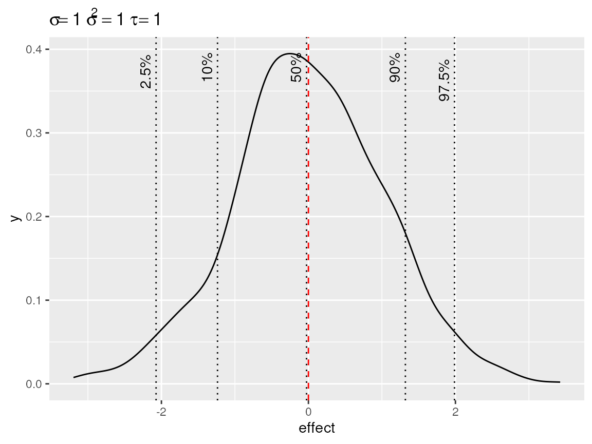
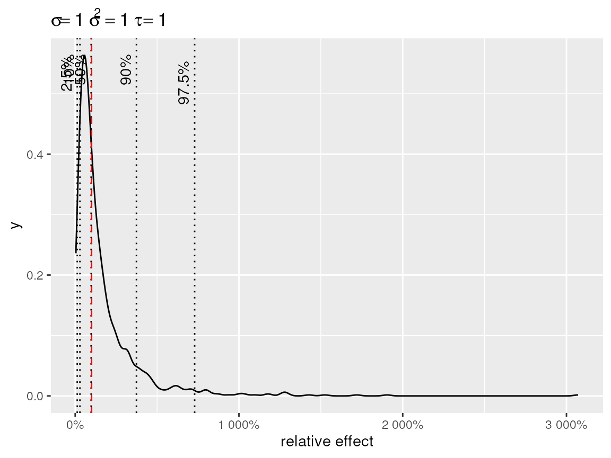
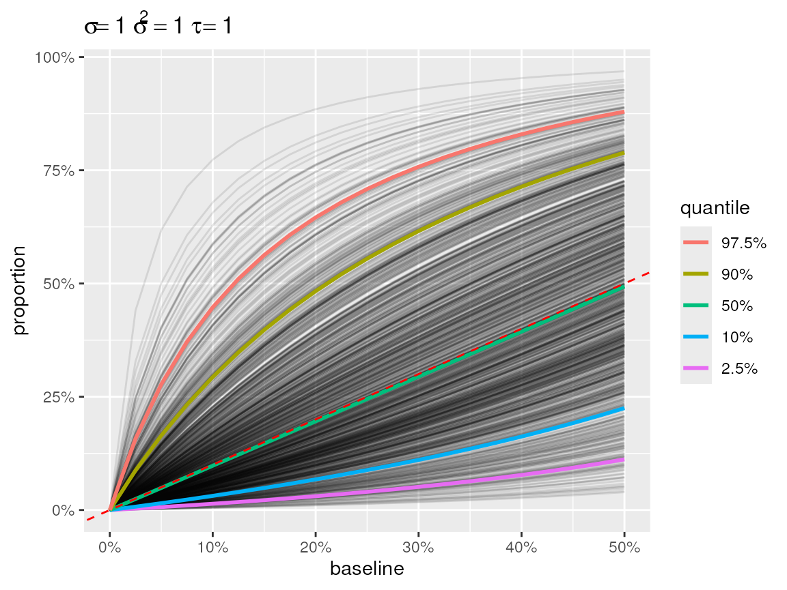
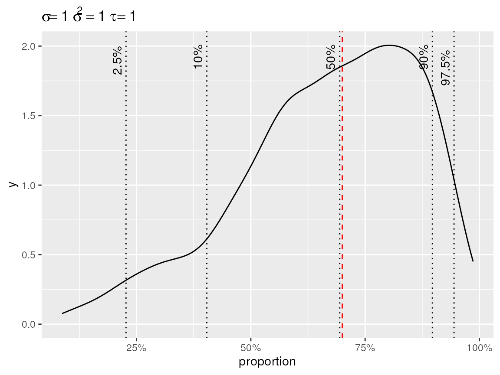
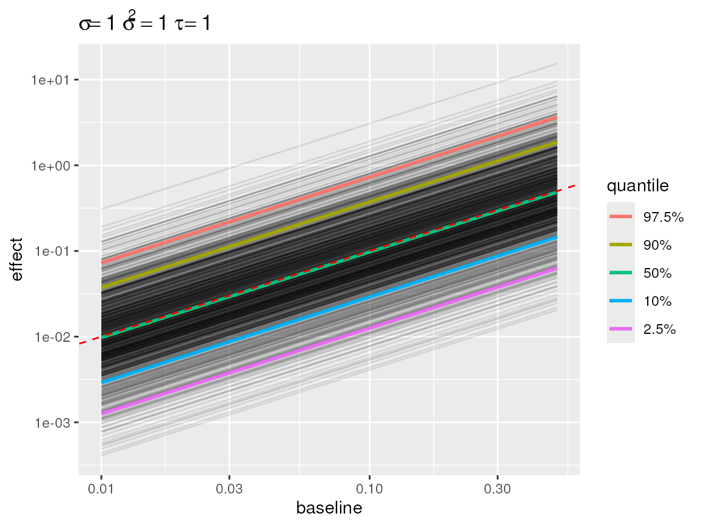
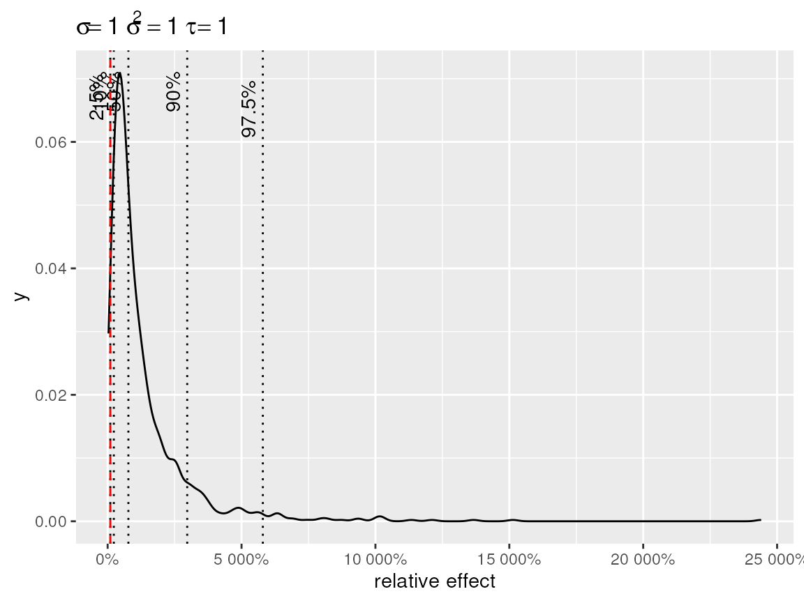
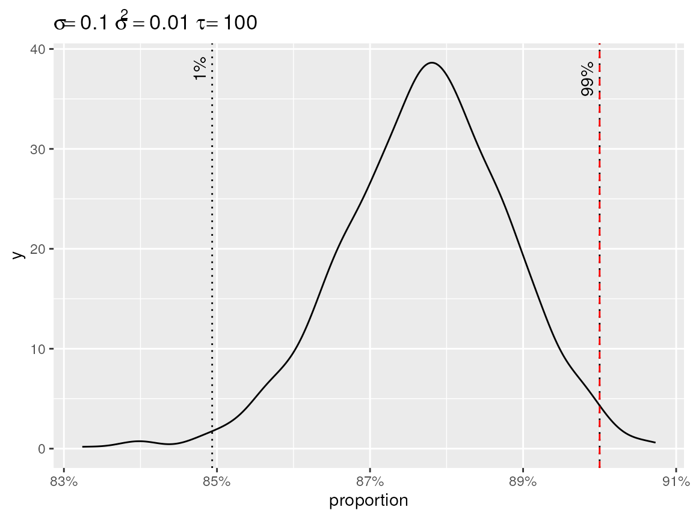
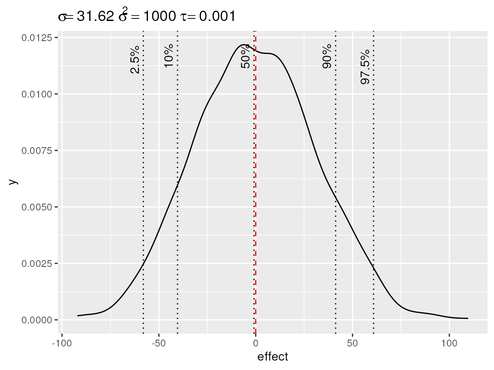
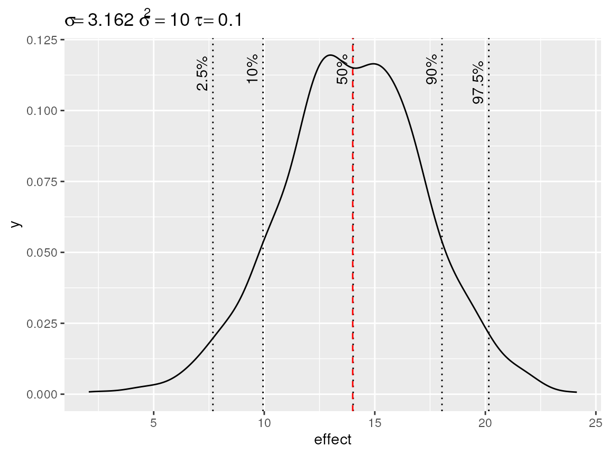

Setting a Prior for the Random Intercept Variance and Fixed Effects
Thierry Onkelinx
2024-10-04
Source:vignettes/prior.Rmd
prior.RmdSimulating random intercepts
simulate_iid() generates a number of iid random
intercepts from a zero mean Gaussian distribution with variance
.
The variance is either specified through the standard deviance
or the precision
.
Specifying both leads to an error, even if both arguments have
compatible arguments.
library(inlatools)
str(x <- simulate_iid(sigma = 1))
#> 'sim_iid' num [1:1000] 0.228 -0.491 -0.998 -0.641 -0.87 ...
#> - attr(*, "sigma")= num 1
str(y <- simulate_iid(tau = 100))
#> 'sim_iid' num [1:1000] 9.05e-06 -6.23e-02 2.33e-02 -6.30e-02 1.31e-02 ...
#> - attr(*, "sigma")= num 0.1
simulate_iid(sigma = 0.1, tau = 100)
#> Error: either 'sigma' or 'tau' must be NULLInspecting simulated random intercepts
The default plot() on the simulated random intercepts
yields a density with indication of the baseline and quantiles. The plot
title displays the standard deviation, variance and precision used to
simulate the random intercepts. This makes it easy to simulate the
random intercept based on a standard deviation and get the precision
required for the prior.
plot(x)
Default plot of simulated random intercepts.
Link functions
Often we are using distributions were the relationship between the
mean and the linear predictor is defined through a link function.
Therefore we added a link argument to the plot function.
This will apply the back transformation to the random intercepts, making
it easier to interpret their effect on the original scale.
plot(x, link = "log")
Default plot with log-link
The plot shows the effect of the random intercept + the baseline. The
default baseline are chosen to get an informative plot.
link = "identity uses baseline = 0 as default.
link = "log" uses baseline = 1, so that the
random intercepts can be interpreted as relative effects. In case of
link = "logit", the absolute effect on the natural scale,
depends on the baseline. Therefore we use
baseline = seq(0, 0.5, length = 21) as default. When more
than one baseline is defined, a line plot is used instead of a density.
Each random intercept is depicted as a separate line.
plot(x, link = "logit")
Default plot with logit link
The user can override the default baseline. So if you want a density
plot in combination with link = "logit", then you need to
specify a single baseline. Note that the baseline is always expressed on
the natural scale.
plot(x, link = "logit", baseline = 0.7)
Density plot with logit link
Likewise you can get a line plot for link = "identity"
or link = "log" if you specify a vector of baselines. The
result of plot() is a ggplot() object, so you
can alter it using standard ggplot functions.
library(ggplot2)
plot(x, link = "log", baseline = c(0.01, 0.1, 0.5)) +
scale_x_log10("baseline") +
scale_y_log10("effect")
#> Scale for x is already present.
#> Adding another scale for x, which will replace the existing scale.
#> Scale for y is already present.
#> Adding another scale for y, which will replace the existing scale.
Line plot with log link
Centring and quantiles
By default the random intercepts are centre so that their mean
matches the baseline. The alternative are center = "bottom"
and center = "top". In those cases, the random effects are
centred to that the baseline matches the lowest
(center = "bottom") or the highest
(center = "top") quantile. This is useful in case you want
to get an idea of the difference between the lowest quantile and some
other point (e.g. the largest quantile). The plot below illustrates that
ratio of more that 50 between extreme random intercepts are not uncommon
when
with a log link.
plot(x, link = "log", center = "bottom")
Density of the random effects after centering to the lowest quantile.
The user has the option to specify custom quantiles.

Density of the random effects after centering to the highest quantile.
Priors for fixed effects
INLA assumes Gaussian priors for the fixed effects. Hence we can use
simulate_iid() to get a feeling of these priors too. Below
we give two examples. The first shows the default prior for fixed
effects. The second one shows an informative prior for a fixed
effect.
fixed <- simulate_iid(tau = 0.001)
plot(fixed)
Simulated density of the default fixed effect prior with mean = 0 and precision = 0.001
fixed <- simulate_iid(tau = 0.1)
plot(fixed, baseline = 14)
Simulated density of an informative fixed effect prior with mean = 14 and precision = 0.1